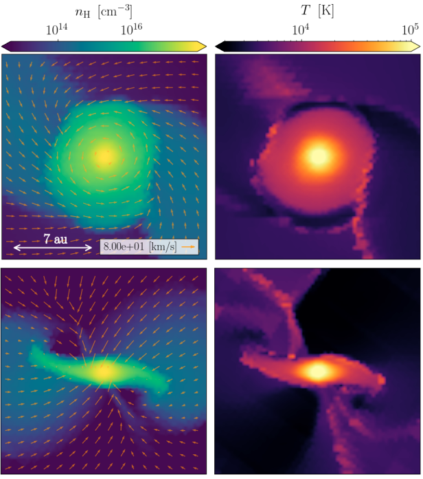
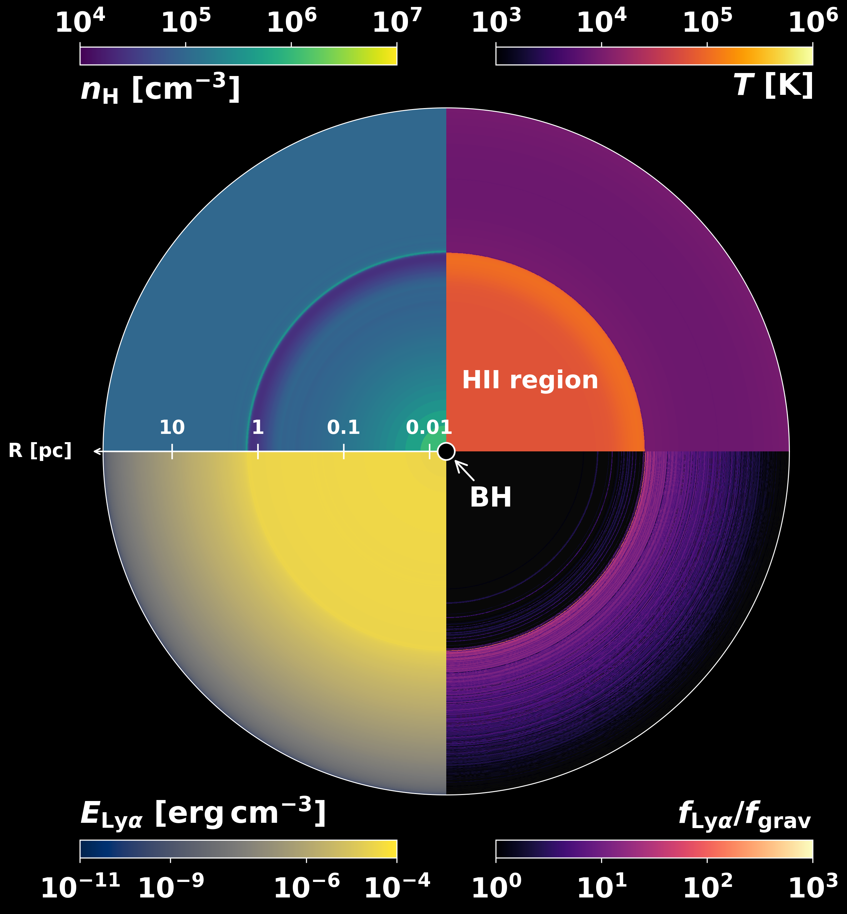

RESEARCH
Research Topics
My theoretical research has focused primarily on the formation and evolution of stars, black holes, and galaxies in the early universe. I use theoretical models and numerical simulations to understand the underlying physical processes, and I also develop new numerical methods.
First Star Formation
The first stars are the earliest stars to form in the universe and have a profound influence on the subsequent formation and evolution of stars, galaxies, and black holes. To study the evolution of gas disks around the first stars, I developed a time-dependent disk model and compared it with three-dimensional numerical simulations. I found that strong gas inflows from the surroundings cause the disk to become more massive than the protostar, leading to widespread disk fragmentation from the earliest stages of first star formation [1]. More recently, I developed a new three-dimensional radiation hydrodynamics method that consistently follows a wide range of spatial scales, from star-forming gas clouds to protostellar interiors [2,3]. Using this method, I investigate how protostars acquire mass, angular momentum, and entropy through gas accretion and how they evolve (Figure 1).

Black Hole Formation and Growth in the Early Universe
Observations of the early universe have revealed that extremely massive supermassive black holes already existed shortly after the Big Bang. Understanding their origins requires us to determine what kinds of black holes formed in the early universe and how they grew. Using semi-analytic models, I investigated how the X-ray background suggested by recent 21 cm observations affects the formation of massive black holes in the early universe [4]. More recently, I have been developing a radiative transfer code for Lyα photons to investigate how Lyα radiation pressure affects gas accretion onto black holes (Figure 2). Through this work, I aim to identify the conditions that enable black holes in the early universe to grow rapidly.
